컴퓨터응용가공산업기사 (2002-03-10 기출문제)
1과목: 기계가공법 및 안전관리
1. 서피스 게이지(surface gage)는 다음 중 어느 곳에 사용 되는가?
- 윤곽 측정
- 각도 측정
- 평면 다듬질 작업
- 금긋기 작업
(정답률: 52%)

2. 빌트업 에지(built-up edge)의 증가를 돕는 사항은?
- 절삭속도의 증대
- 칩두께의 증대
- 공구 윗면 경사각의 증대
- 윤활유의 사용
(정답률: 48%)
3. 사인바(Sine bar)에서 정반면으로 부터 블록게이지의 높이를 각각 알고 있을 때, 각도 측정을 위해 필요한 것은?
- 양 롤러의 중심거리
- 바아의 폭
- 바아의 길이
- 롤러의 크기
(정답률: 70%)
4. 주물사의 시험에 속하지 않는 것은?
- 통기도 시험
- 내화도 시험
- 점착력 시험
- 피로 시험
(정답률: 47%)
5. 다음 중 직접 측정의 장점이 아닌 것은?
- 측정범위가 다른 측정방법보다 넓다.
- 피측정물의 실제치수를 직접 읽을 수 있다.
- 양이 적고, 종류가 많은 제품을 측정하기에 적합하다.
- 조작이 간단하고, 경험을 필요로 하지 않는다.
(정답률: 63%)
6. 압출 가공의 종류에 해당되지 않는 것은?
- 복식 압출
- 직접 압출
- 간접 압출
- 충격 압출
(정답률: 40%)
7. 산소-아세틸렌 가스용접법의 장점이 아닌 것은?
- 토치의 거리나 화염의 크기를 가감함으로서 가열의 조정이 자유롭다.
- 열 에너지의 집중이 높다.
- 전원설비가 필요치 않고 언제 어디서나 장치를 운반하여 용접작업이 가능하다.
- 토치나 화구(火口)를 교환하면 절단, 열처리, 굽힘가 공등의 각종 가열작업에 이용할 수 있다.
(정답률: 29%)
8. 소성가공에서 열간가공과 냉간가공을 구분하는 온도는?
- 금속이 녹는 온도
- 변태점 온도
- 발광 온도
- 재결정 온도
(정답률: 68%)
9. 세이퍼에서 행정 350㎜, 바이트의 왕복 회수가 60회/min이며, 귀환 속도비
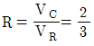
이고, VR: 귀환속도일 때, 절삭속도(Vc)의 값은?- 35 m/min
- 40 m/min
- 31.5 m/min
- 52.5 m/min
(정답률: 23%)
10. 소성가공에 해당되는 것은?
- 선삭
- 엠보싱
- 드릴링
- 브로칭
(정답률: 49%)
11. 강의 특수 열처리법에서, 오스테나이트를 경(硬)한 조직인 베이나이트로 변환시키는 항온 열처리법은?
- 오스포밍(ausforming)
- 노멀라이징(normalizing)
- 오스템퍼링(austempering)
- 마르템퍼링(martempering)
(정답률: 57%)
12. 인발작업에서 지름 15㎜의 철사(wire)를 인발하여 지름 13㎜로 하였을 때, 가공도 및 단면 수축률은?
- 가공도≒24.9%, 단면수축률≒75.1%
- 가공도≒75.1%, 단면수축률≒24.9%
- 가공도≒75.1%, 단면수축률≒50.3%
- 가공도≒24.9%, 단면수축률≒85.1%
(정답률: 40%)
13. 내경 측정에 사용되는 측정기가 아닌 것은?
- 내측 마이크로미터
- 실린더 게이지
- 공기 마이크로미터
- 옵티컬 플랫
(정답률: 58%)
14. 주물자를 선택할 때 무엇을 기준으로 하는가?
- 목재의 재질
- 주물의 가열온도
- 목형의 중량
- 주물의 재질
(정답률: 54%)
15. 가늘고 긴 공작물을 선반가공 할 때, 필요한 부속품은?
- 방진구
- 심봉
- 센터
- 면판
(정답률: 70%)
16. 아크나 발생가스가 다 같이 용제속에 잠겨져 있어서 잠호 용접이라고 하며, 상품명으로는 링컨용접법이라고도 하는 것은?
- TIG용접
- 서브머지드 용접
- MIG용접
- 엘렉트로슬랙 용접
(정답률: 37%)
17. 블록게이지(block gauge)는 어느 작업으로 완성 가공되는가?
- 호닝
- 버핑
- 래핑(건식)
- 브로칭
(정답률: 48%)
18. 인발작업에서 인발력(引拔力)이 결정되기 위한 인자에 해당되지 않는 것은?
- 다이(die) 마찰
- 다이(die) 각
- 단면 감소율
- 압력각
(정답률: 40%)
19. 가공물을 양극으로 하고 불용해성인 납, 구리를 음극으로하여 전해액 속에 넣으면 가공물의 표면이 전기에 의한 화학작용으로, 매끈한 면을 얻을 수 있는 방법은?
- 전기화학가공
- 전해연마
- 방전가공
- 화학연마
(정답률: 69%)
20. 표면경화와 피로강도 상승의 효과가 함께 있는 가공법은?
- 숏피닝
- 래핑
- 샌드블라스팅
- 호빙
(정답률: 65%)
2과목: 기계설계 및 기계재료
21. 보통주철은 주조한 그대로 사용되는 일이 많으나 최근에는 각종 열처리를 실시하여 재료의 성질을 개선한다. 다음 중 관계과 가장 먼 것은?
- 전연성 향상
- 피로강도 향상
- 내마모성 향상
- 피삭성 및 치수안정성 향상
(정답률: 37%)
22. 유니파이나사의 나사산 각도는?
- 55°
- 60°
- 30°
- 50°
(정답률: 52%)
23. 철의 동소체로서 A3 변태에서 A4 변태 사이에 있는 철은?
- α -Fe
- β -Fe
- γ-Fe
- δ -Fe
(정답률: 42%)
24. 풀림을 하는 목적을 설명한 것 중 틀린 사항은?
- 점성을 제거
- 가공 중 응력제거
- 가공 후 변형제거
- 재료 내부에 생긴 응력제거
(정답률: 49%)
25. 다음 중 고속도강과 가장 관계가 먼 사항은?
- W-Cr-V(18-4-1)계가 대표적이다
- 500-600℃로 뜨임하면 급격히 연화(軟化)된다.
- W계와 Mo계 두가지로 크게 나뉜다.
- 각종 공구용으로 이용된다.
(정답률: 40%)
26. 펄라이트(Pearlite)의 생성되는 과정에서 틀린 것은?
- Fe3C의 핵이 성장한다.
- α 가 생긴 입자에 Fe3C가 생긴다.
- γ의 결정립계에 Fe3C의 핵이 생긴다.
- Fe3C의 주위에 γ 가 생긴다.
(정답률: 30%)
27. 탄소강은 일반적으로 200∼300℃ 부근에서 상온보다 더욱 취약한 성질을 갖는다. 이것을 무엇이라 하는가?
- 저온취성
- 청열취성
- 고온취성
- 적열취성
(정답률: 42%)
28. 원뿔면 또는 원통면 밸브시트 안에서 밸브가 회전하고 유체가 그 회전축에 직각으로 유동하는 구조로 된 밸브는?
- 리프트밸브
- 슬라이딩밸브
- 회전밸브
- 버터플라이밸브
(정답률: 41%)
29. 묻힘키이(sunk key)에서 생기는 전단응력을 τ, 키이에 생기는 압축응력을 σc라 하여 τ /σc = 1/2일때 키의 폭 b와 높이 h와의 관계를 가장 옳게 설명한 것은?
- 폭이 높이 보다 크다.
- 폭이 높이 보다 작다.
- 폭과 높이가 같다.
- 폭과 높이는 반비례 한다.
(정답률: 19%)
30. 반복 하중을 가하여 재료의 강도를 평가하는 시험 방법은 다음 중 어느 것인가?
- 충격시험
- 인장시험
- 굽힘시험
- 피로시험
(정답률: 47%)
31. 기중기 등에서 물체를 내릴 때 하중 자신에 의하여 브레이크 작용을 행하여 속도를 억제하는 것은?
- 블록 브레이크
- 밴드 브레이크
- 자동 하중 브레이크
- 축압 브레이크
(정답률: 59%)
32. 그림과 같은 용접이음에서 용접부에 발생하는 인장응력은 얼마인가?
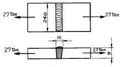
- 7.5㎏f/mm2
- 12.5㎏f/mm2
- 18.8㎏f/mm2
- 25.6㎏f/mm2
(정답률: 37%)
33. 400rpm으로 전동축을 지지하고 있는 미끄럼 베어링에서 저어널의 지름 d =6㎝, 저어널의 길이 ℓ =10㎝이고, W=420㎏f의 레디얼 하중이 작용할 때, 베어링 압력은?
- 0.⑤㎏f/mm2
- 0.06㎏fmm2
- 0.07㎏fmm2
- 0.08㎏fmm2
(정답률: 36%)
34. 염기성 전로에 사용되는 내화벽돌 재료는 어느 것인가?
- 샤모트 벽돌
- 규석 벽돌
- 고알루미나 벽돌
- 마그네시아 벽돌
(정답률: 23%)
35. 비철계 초소성 재료 중 최대의 연신을 갖는 합금은?
- Ag합금
- Co합금
- Bi합금
- Cd합금
(정답률: 24%)
36. 풀리장치에서 벨트의 장력이 너무 크게 되면 어떤 현상이 일어나는가?
- 미끄럼이 크게 된다.
- 전동이 불확실하게 된다.
- 베어링의 마찰손실이 크게 된다.
- 회전력이 감소 된다.
(정답률: 43%)
37. 다음 축이음 중 두축이 서로 평행하고 거리가 짧고 교차하지 않는 경우에 사용하는 기계요소는?
- 플랜지 커플링
- 맞물림 클러치
- 올덤 커플링
- 유니버설 조인트
(정답률: 33%)
38. 다음중 불변강이 아닌것은?
- 인바
- 엘린바
- 인코넬
- 슈퍼인바
(정답률: 46%)
39. 그림과 같은 스프링 장치에서 각 스프링의 상수 K1=4㎏f/㎝, K2=5 ㎏f/㎝, K3=6 ㎏f/㎝이며 하중 방향의 처짐δ =150mm일 때, 하중 P는 얼마인가?(오류 신고가 접수된 문제입니다. 반드시 정답과 해설을 확인하시기 바랍니다.)
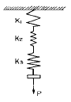
- P = 251㎏f
- P = 225㎏f
- P = 31.4㎏f
- P = 24.3㎏f
(정답률: 13%)
40. 두개의 기어가 서로 맞물려서 운동을 전달하고 있다. 회전 방향이 같고 감속비가 큰 기어는 어느 것인가?
- 헬리컬 기어
- 웜기어
- 내접기어
- 하이포이드 기어
(정답률: 35%)
3과목: 컴퓨터응용가공
41. 3차원 동차좌표계에서 변환 행렬(matrix)의 크기는 얼마로 해야 일반성이 있는가?
- (2x2)
- (3x3)
- (4x4)
- (6x6)
(정답률: 37%)
42. 행렬
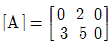
와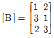
의곱은?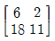
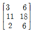
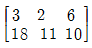
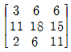
(정답률: 23%)
43. Serial COM port로 출력장치에 연결하여 사용할 때 data의 전송속도를 나타내는 단위는?
- cps
- ips
- bps
- Nps
(정답률: 57%)
44. 다음 중에서 옳지 않은 설명은?
- 부품의 모서리 부분을 각이 지도록 깍아내는 것을 모따기(CHAMFERING)라고 한다.
- 치수기입시 원호가 180° 가 못되는 것은 반지름으로 표시한다.
- 호의 길이를 표시하는 치수선은 그 호와 같은 중심의 원호로 표시한다.
- 치수기입할 때 기록해야하는 숫자가 많은 경우 3자리마다 콤마(,)를 찍어야 한다.
(정답률: 46%)
45. 다음 중 r (θ) = 5cosθi +5sinθj +(θ/π )k 에 대하여 θ=0 에서의 접선의 방정식은?
- t (u) = 5i +5j +(u/π )k
- t (u) = 5i +5uj +(u/π )k
- t (u) = 5i +5j +(θ/π )k
- t (u) = 5i +5uj +(θ/π )k
(정답률: 42%)
46.
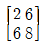
인 직선을 x 방향으로 -5, y 방향으로 3만큼 이동 시킬 때 결과는?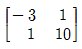
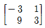
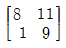
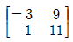
(정답률: 48%)
47. 기하공차의 종류 중 모양 공차에 해당하지 않는 것은?
- 진직도 공차
- 평면도 공차
- 평행도 공차
- 원통도 공차
(정답률: 33%)
48. 한글 1글자를 기록하는데 2 바이트(byte)가 필요하다면 기억용량 600MB의 광디스크(CD) 1장에는 한글 몇 글자까지 기록할 수 있는가?
- 300,000,000 자
- 314,572,800 자
- 600,000,000 자
- 629,145,600 자
(정답률: 28%)
49. 다음 중 곡면을 만드는 방법이 아닌 것은?
- 스위핑(sweeping)
- 로프팅(lofting)
- Bezier 패치(patch)
- 셀(shell)
(정답률: 54%)
50. 롤링 베어링 호칭번호가 60 26 P6일때 안지름의 값은 몇 ㎜인가?
- 100
- 120
- 130
- 140
(정답률: 51%)
51. CAD 소프트웨어의 가장 기본이 되는 그래픽 소프트웨어의 구성원칙에 맞지 않는 것은?
- 그래픽 패키지(Graphic Package)
- 응용프로그램(Application Program)
- 턴키 시스템(Turnkey system)
- 데이터 베이스(Data Base)
(정답률: 46%)
52. 다음 중 커서 콘트롤 장치가 아닌 것은?
- Thumb wheel
- Joystick
- Tracker ball
- Pen plotter
(정답률: 40%)
53. CAD 시스템에서 낮은 차수의 곡선을 선호하는 이유는?
- 차수가 낮을수록 곡선의 불필요한 진동이 덜하다.
- 차수가 낮을수록 곡선을 그리는데 계산시간이 많이 든다.
- 차수가 낮을수록 곡선의 미(美)적인 효과가 크다.
- 차수가 낮을수록 곡선을 수정하기 용이하다.
(정답률: 26%)
54. 기계제도에서 주로 사용되는 투상법은 어느 것인가?
- 투시도
- 사투상도
- 정투상도
- 등각투상도
(정답률: 42%)
55. 다음 중 가는 파선 또는 굵은 파선의 용도 설명으로 맞는 것은?
- 치수를 기입하는데 사용된다.
- 도형의 중심을 표시하는데 사용된다.
- 대상물의 일부를 파단한 경계 또는 일부를 떼어낸 경계를 표시한다.
- 대상물의 보이지 않는 부분의 모양을 표시한다.
(정답률: 25%)
56. CAD/CAM 시스템에서 구성된 자료를 서로 다른 시스템에서 공유하기 위해서 사용하는 표준파일 시스템으로 섹션 (section)과 엔티티(entity)로 구분된 표준파일은?
- PHIGS
- DXF
- IGES
- GKS
(정답률: 26%)
57. 스프링 도시의 설명 중 틀린 것은?
- 스프링은 원칙적으로 무하중 상태에서 도시한다.
- 스프링의 모양이나 종류만 도시하는 경우에는 스프링 재료의 중심선을 굵은 2점쇄선으로 그린다.
- 하중과 높이 또는 처짐과의 관계를 표시할 필요가 있는 경우에는 선도 또는 표로 표시한다.
- 특별한 단서가 없는한 모두 오른쪽 감기로 도시한다.
(정답률: 45%)
58. 표면거칠기 기입방법이 잘못 설명된 것은?
- 부품 전체가 같은 다듬질 기호일 때는 부품번호 옆에 기입한다.
- 기어에 기입할 때는 피치선에 기입할 수도 있다.
- 기어에 기입할 때는 측면도의 잇봉우리에 따라서 기입한다.
- 부품 전체가 같은 다듬질 기호일 때 표제란 곁에 기입한다.
(정답률: 18%)
59. 한국산업규격(KS)에 제도규격으로 제도통칙이 제정되어 있으며 이 규격은 공업의 각 분야에서 사용하는 도면을 작성할 때 요구되는 사항을 규정하고 있는데 다음 내용중 규정되어 있지 않는 것은?
- 제도에 있어서 치수의 허용한계 기입방법
- 회전축의 높이
- 도면의 크기와 양식
- 제도에 사용하는 척도
(정답률: 59%)
60. 다음 중 분산처리형 시스템이 갖추어야 할 기본 성능이 아닌 것은?
- 여러 시스템 중에서 일부 시스템이 고장이 발생하더라도 나머지는 정상작동 되어야 한다.
- 자료처리 및 계산작업은 주(main) 시스템에서 이루어져야 한다.
- 구성된 시스템별 자료는 다른 컴퓨터 시스템에 자료의 내용에 변화가 없어야 한다.
- 사용자가 구성한 자료나 프로그램을 다른 사용자가 사용하고자 할 때는 정보 통신망을 통해서 언제라도해당 자료를 사용하거나 보내줄 수 있어야 한다.
(정답률: 52%)
4과목: 기계제도 및 CNC공작법
61. 다음 중 소수점 사용이 옳은 것은?
- S1800.
- M⑤.
- G81.
- I4.
(정답률: 64%)
62. 솔리드 모델링에서 CSG와 비교한 B-rep의 특징으로 맞는 것은?
- Data Base의 Memory를 적게 차지한다.
- 표면적 계산이 곤란하다.
- Data 구조가 복잡하다.
- 전개도 작성이 곤란하다.
(정답률: 28%)
63. 머시닝센타에서 절대지령으로 그림과 같이 C1 → C2까지 시계방향으로 윤곽가공할 때 옳은 것은?
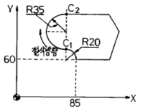
- G91 G02 X-20. Y90. R35.;
- G91 G03 X65. Y150. R35.;
- G90 G02 X65. Y150. R35.;
- G90 G03 X0. Y70. R35.;
(정답률: 54%)
64. 파트(Part) 프로그램이 같더라도 여러종류의 CNC 공작기계에 알맞는 NC 데이터를 생성하도록 역할을 하는 것은?
- Main processor
- Multi processor
- Micro processor
- Post processor
(정답률: 49%)
65. 덕트(duct)형 곡면으로서 단면 곡선과 스플라인(spline)으로 정의되는 곡면을 모델링하는데 가장 적합한 방식은?
- Sweep 방법
- 비례 전개법
- Point-data fitting 법
- Curve-net interpolation 법
(정답률: 47%)
66. 절삭면과 공구의 진행방향이 그림과 같을 때 상향절삭으로 절삭면 부위를 가공하기 위한 공구경 보정과 회전 방향이 맞는 것은?
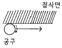
- M03, G42
- M03, G41
- M04, G41
- M04, G42
(정답률: 52%)
67. 형상 모델링에서는 기본적으로 곡면을 많은 사각형 또는 삼각형으로 분할하여 분할된 단위 곡면 요소들을 이어서 곡면을 표현하는데 이 사각형 또는 삼각형의 곡면 요소를 무엇이라고 하는가?
- 프리미티브(primitive)
- 요소(element)
- 패치(patch)
- 놋(knot)
(정답률: 33%)
68. B-spline곡선에 대한 설명으로 옳지 않은 것은?
- 곡선전체의 연속성이 좋다.
- 일부 정점(control point)의 이동에 의하여 곡선 전체의 모양을 변경할 수 있다.
- 곡선함수의 차수가 1개의 정점(control point)이 영향을 줄 수 있는 곡선 세그먼트의 갯수를 결정한다.
- B-spline 곡선 세그먼트는 그 근방의 정점의 위치 벡터에 의하여 형상이 결정된다.
(정답률: 34%)
69. 서보모터에서 토크가 발생할 때, 20㎜ 피치의 리드 스크루(lead screw)가 1도의 비틀림 (wind up)이 발생되었다면 운동 손실의 크기는 얼마인가?
- 0.0⑤5 ㎜
- 0.⑤5 ㎜
- 0.0275 ㎜
- 0.00275 ㎜
(정답률: 33%)
70. CNC 보간 방법 중 공구를 3차원적으로 제어하는 방법은 어느 것인가?
- 위치 제어
- 곡면 제어
- 곡선 제어
- 직선 제어
(정답률: 40%)
71. 와이어프레임 모델의 특징을 설명한 것 중 틀린 것은?
- 은선제거가 가능하다.
- 처리속도가 빠르다.
- 단면도 작성이 어렵다.
- 데이터의 구성이 간단하다.
(정답률: 50%)
72. CNC에서 2.5초 동안 프로그램의 진행을 정지시키는 프로그램으로 맞는 것은?
- G04 X2.5
- G04 P0.025
- G04 P2.5
- G04 P0.25
(정답률: 36%)
73. 여러 종류의 CAD/CAM소프트웨어 간의 정보교환을 위하여 미국의 NBS(National Bureau of Standards)가 제안, ANSI 규격으로 승인한 표준 데이터 형식은?
- GKS
- DXF
- IGES
- STEP
(정답률: 51%)
74. 솔리드 모델링의 표현방식이 아닌 것은?
- 경계 표현 방식
- 스윕(sweep) 표현 방식
- 공간 분할 표현 방식
- 개별(Individual) 표현 방식
(정답률: 31%)
75. 다음 서피스 모델(surface model)의 특징을 설명한 것 중 틀린 것은?
- 단면도 작성 및 숨은선 소거가 가능하다.
- NC 가공 정보를 얻을 수 있다.
- 와이어 프레임보다 데이터량이 증가한다.
- 물리적 성질을 계산하기 쉽다.
(정답률: 58%)
76. 선반가공시 製50 환봉을 350rpm, 이송 0.3mm/rev, 노즈반경이 R0.4 일때 가공면의 이론조도는?
- 0.012
- 0.⑤
- 0.028
- 0.066
(정답률: 29%)
77. CNC 기계에서 기계적 운동을 전기적 신호로 바꾸어 주는 장치는?
- 리졸버
- 서보기구
- 컨트롤러
- 엔코더
(정답률: 46%)
78. CNC 선반에서 지령치 X=75㎜로서 소재를 가공한 후 측정한 결과 ø74.92이었다. 기존의 X축 보정치를 0.0⑤라 하면 수정해야 할 공구보정치는 총 얼마인가? (단, 직경 지령 사용)
- 0.085
- 0.045
- 0.85
- 0.45
(정답률: 62%)
79. 그림은 P1에서 P2까지의 CNC선반 프로그램이다. 빈칸에 알맞은 것은?
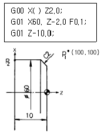
- 52.0
- 56.0
- 58.0
- 59.0
(정답률: 19%)
80. 공작기계의 제어모터를 이용한 수치제어의 기본방식을 설명한 것 중 틀린 것은?
- 스태핑 모터는 전기펄스를 받아서 회전각도에 따라 테이블이 이송한다.
- 서보모터가 회전하면 테이블의 이송과 함께 엔코더에 의하여 전기펄스가 발생된다.
- 타코제너레이터는 입력되는 전기펄스를 저장하여 전압을 발생시킨다.
- DA 컨버터에서 출력되는 전압은 서보모터를 회전시킨다.
(정답률: 26%)